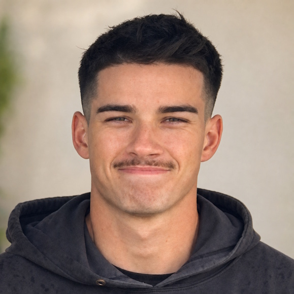
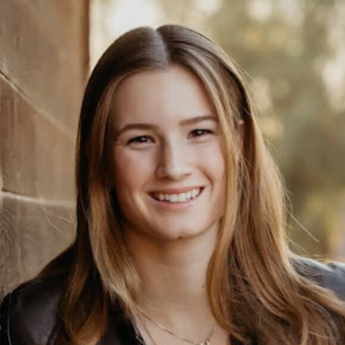
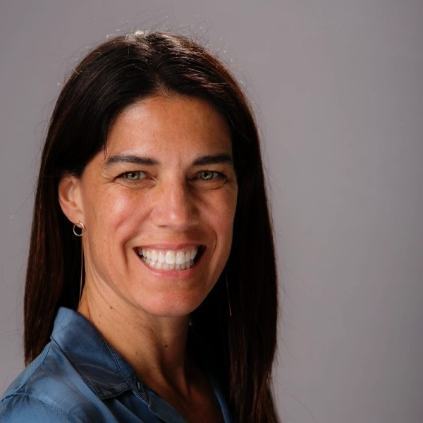
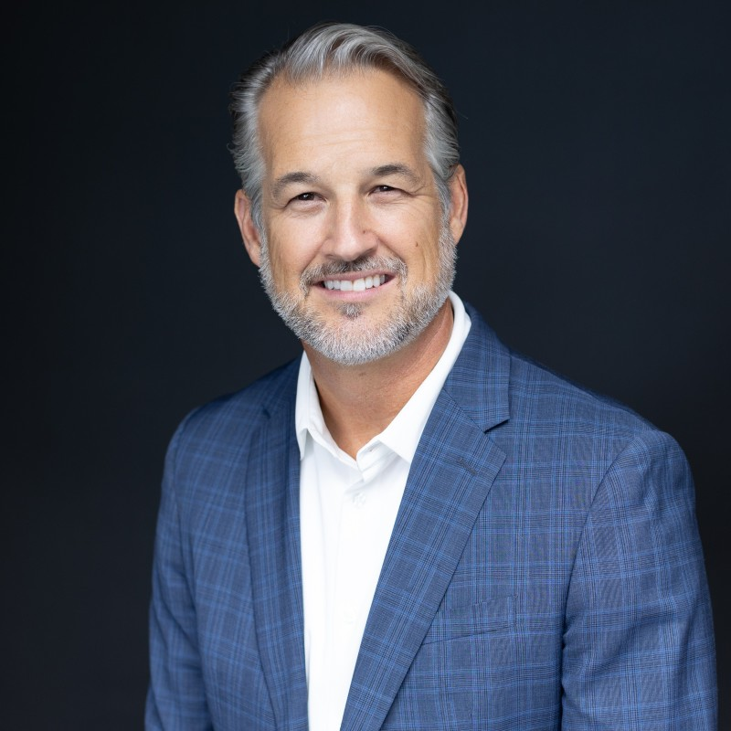
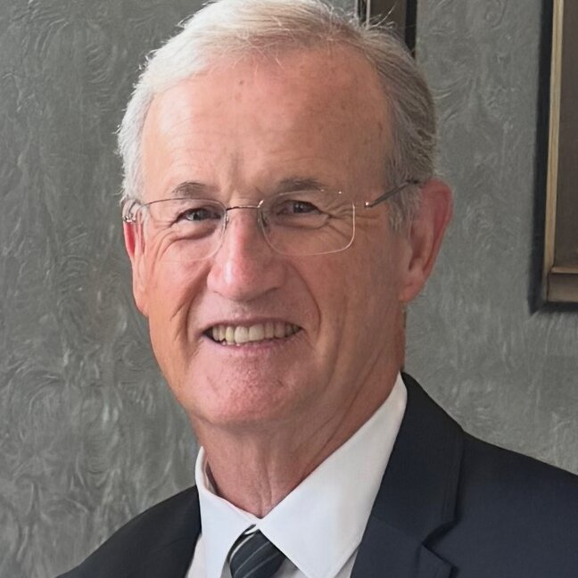

How it started
Prosperity Pathways began in a high school guidance office. River Sporrer, then a junior, watched a friend — one of the strongest students in their AP class — quietly decline to register for the exam. The reason wasn't readiness. It was the fee.
That spring, River learned the friend was far from alone. Across the school, students who had done the work were skipping exams that could earn them college credit, simply because of cost. The college-credit head start that AP exams promise was reaching the students who needed it least and missing the students who needed it most.
So River started covering fees — first out of a summer-job savings, then through small community donations, tracked in a spreadsheet. Within a year, with classmate Ibrahim Salih leading outreach to neighboring schools, the effort became a registered 501(c)(3): the Prosperity Pathways AP Foundation.
We remain student-founded and student-run, with a single, unglamorous goal — that no prepared student misses an exam because of its price.
Board of Directors

RS
River Sporrer
Board Member

River Sporrer
River is a first-year student at the University of Utah and is a 3/C Midshipman in their NROTC Program, preparing to commission as a Naval Officer. He brings frontline and operational experience from community-focused businesses.
River is the Founder of Prosperity Pathways AP Foundation, which is continuing to grow with the help of family and friends. Through this nonprofit, he is strengthening his interest in service, equity, and project execution. Fluent in Spanish and currently learning Arabic, he spends his free time snowboarding and enjoying the outdoors with friends and family.

GS
Georgia Sporrer
Board Member

Georgia Sporrer
Georgia Sporrer is an undergraduate at Boston University studying Biology on a pre-medical track, with a passion for healthcare and clinical research. She has been actively involved in student organizations focused on medical ethics, global health, and emergency services, and holds a Stop the Bleed certification.
Georgia is seeking summer medical internships that contribute to patient care, research, and community health initiatives while further developing her clinical and research skills. She is committed to drawing on her volunteer and academic experiences to make a meaningful impact in healthcare.

TS
Tara Sporrer
Board Member

Tara Sporrer
Tara Sporrer leads Consulting Partner Marketing at Anthropic, bringing 15+ years of expertise in go-to-market strategy for SaaS, customer experience, and startups. Before Anthropic, she was Head of AI and Startup Partner Marketing at Amazon Web Services (AWS), where she built and led co-marketing programs with strategic technology and consulting partners. Earlier, she spent over a decade as SVP of Marketing driving customer acquisition and new business growth.
Tara holds a BA in Psychology from San Diego State University and is based in Carlsbad, California.

SS
Scott Sporrer
Board Member

Scott Sporrer
Scott Sporrer is a Partner and CFO at Exit Consulting Group, Inc. (ECG), bringing 20 years of advisory experience to business owners across the full life cycle of their companies, with a focus on exit planning. To date, he has been responsible for more than $500 million in client transactions.
Scott began his career in San Diego with Ernst & Young (EY), serving technology-based, publicly traded multinational companies, including two years on an international compliance team based in Santiago, Chile. He went on to hold a range of operational and financial roles, including M&A advisory with RA Capital Advisors, CFO of Phoenix Footwear Group (a publicly traded footwear and apparel manufacturer), and President of U.S. Operations for a Spanish solar developer and module manufacturer. He spent a decade in private industry before returning to his passion for advising clients through growth.

BS
Bob Sporrer
Board Member

Bob Sporrer
Originally from Billings, Montana, received a BS in Business Finance from University of Wyoming, and an MBA in Finance from the University of Southern California, Marshall School of Business.
Retired in 2005 from a career in banking, starting with Lloyds Bank, LTD and Wells Fargo Bank in Los Angeles, and culminating in President, CEO, and Board Chairmanship roles with two different community banks in San Diego.
Since retirement, has participated in co-founding, and serving on the board of three separate manufacturing and service companies, ultimately resulting in profitable sale in each of the three. Bob is now very excited to help in any way in this newly formed charitable non-profit with a very worthy cause to help others, founded by his grandson, River Sporrer.
Bob has been happily married to his childhood sweetheart for coming up on 58 years, and is proudest of raising 3 wonderful sons and watching them and their terrific wives raise their 4 wonderful grandchildren.
IS
Ibrahim Salih
Advisory Board Member
Ibrahim Salih
Add a short bio for Ibrahim's advisory role here.
Leadership Team
RS
River Sporrer
President
River Sporrer
Add a short bio for River's role as President here.
IS
Ibrahim Salih
Vice President of Operations
Ibrahim Salih
Add a short bio for Ibrahim's role as VP of Operations here.
GS
Georgia Sporrer
Director of Development
Georgia Sporrer
Add a short bio for Georgia's role as Director of Development here.